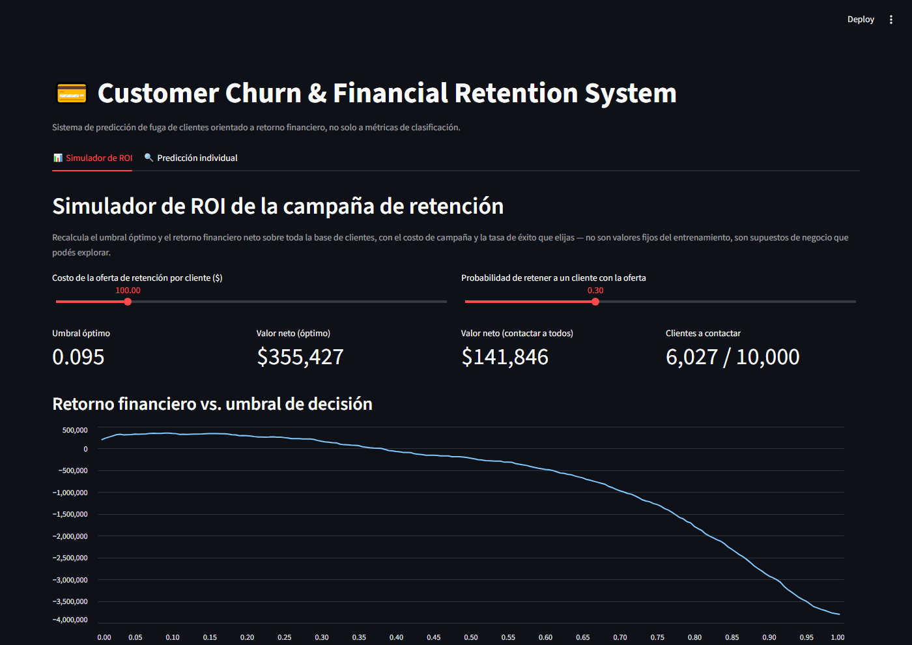
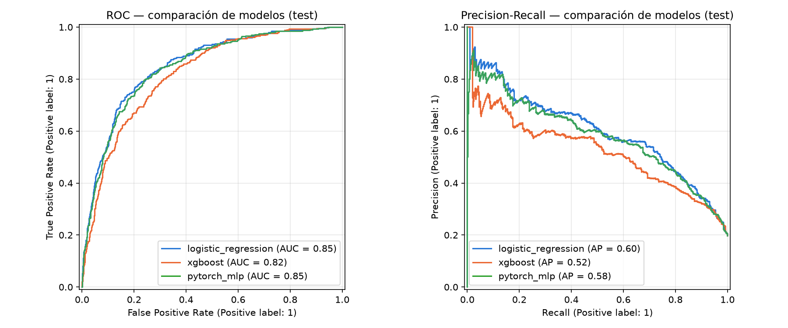
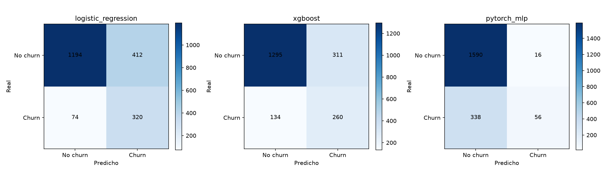
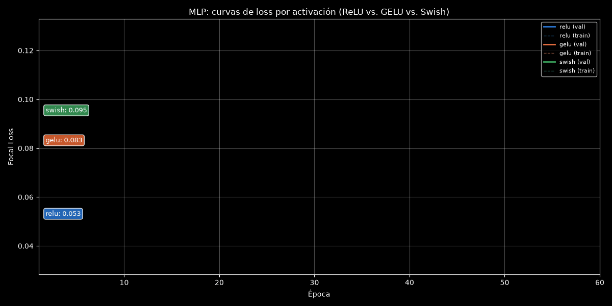
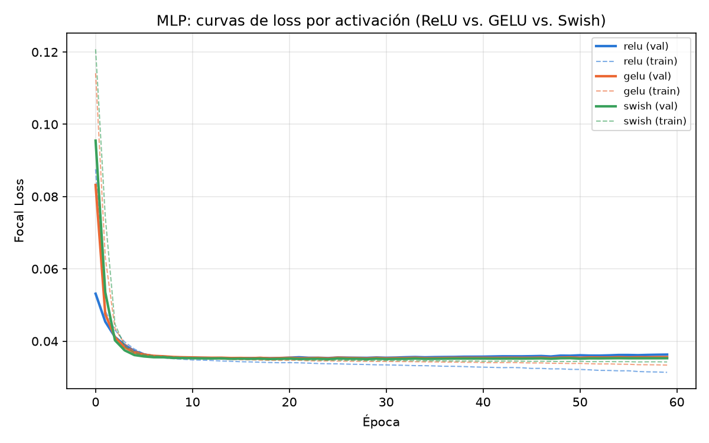
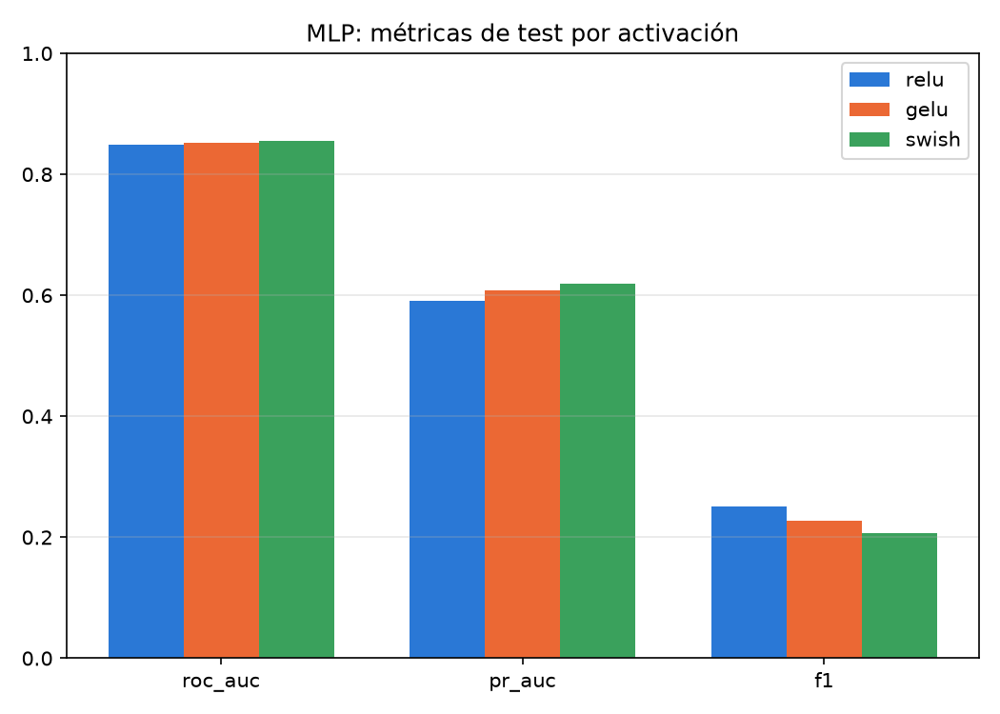

An end-to-end customer churn prediction system for banking/retail, built around one central idea: a churn model isn't worth its AUC, it's worth how much money the business stops losing when it's used to decide who to contact.
This page shows the project's results. The methodology, the design decisions and the limitations are documented in the repository's README.




reports/model_comparison.duckdb (tables model_comparison_metrics and mlp_activation_comparison) — a lightweight, SQL-queryable complement to the MLflow tracking/registry that train.py already uses for the production model.
reports/model_comparison.duckdb (tables model_comparison_metrics and mlp_activation_comparison) — a lightweight, SQL-queryable complement to the MLflow tracking/registry that train.py already uses for the production model.
reports/model_comparison.duckdb (tables model_comparison_metrics and mlp_activation_comparison) — a lightweight, SQL-queryable complement to the MLflow tracking/registry that train.py already uses for the production model.